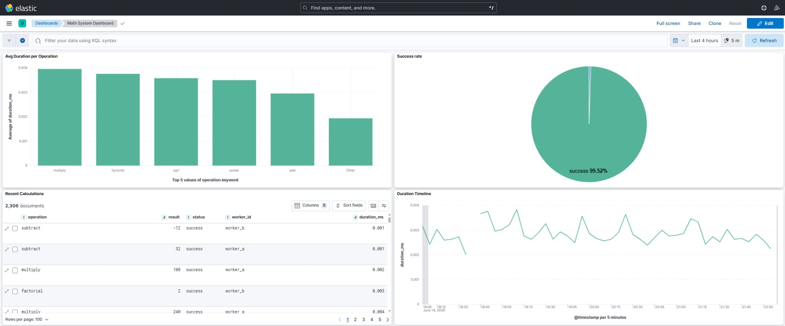
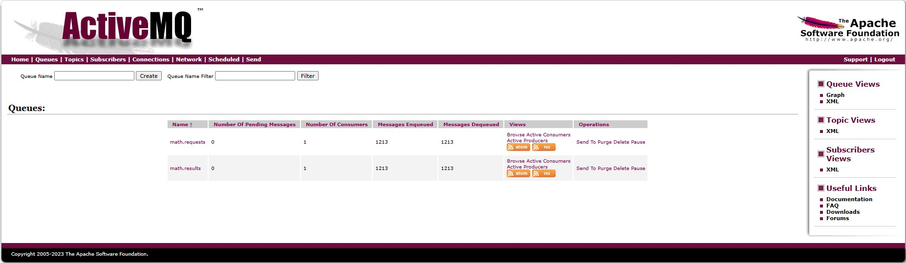
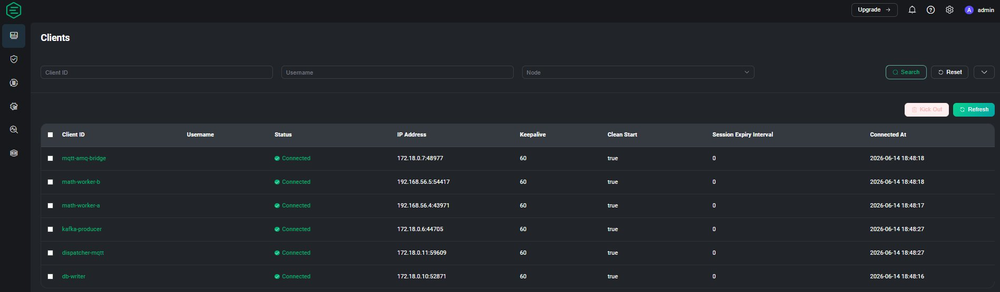
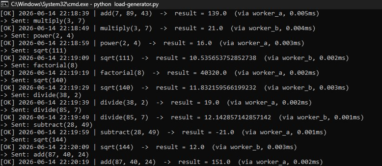
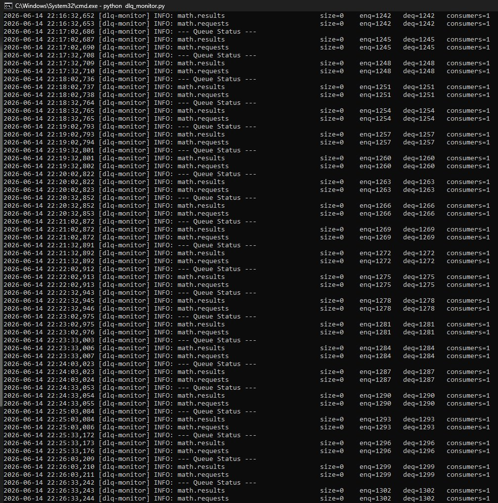
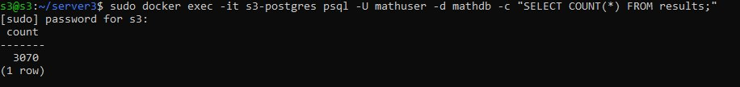

portfolio project · distributed systems
ActiveMQ + EMQX
Distributed Math System
A production-grade distributed system that routes arithmetic computation requests across worker nodes via dual message brokers, with real-time observability through the ELK stack and results persisted to PostgreSQL.
OVERVIEW
What this project demonstrates
Built to showcase real-world distributed systems design, this project implements a horizontally scalable computation pipeline. Math operations submitted by a load generator are serialised as messages and distributed across worker nodes through two complementary brokers — ActiveMQ for JMS-style enterprise queuing and EMQX for lightweight MQTT pub/sub.
Completed results are persisted to PostgreSQL and every event is streamed to Elasticsearch for indexing. A custom Kibana dashboard surfaces operation duration, success rate, worker utilisation, and a live duration timeline — demonstrating end-to-end production observability.
ARCHITECTURE
System design
Full message flow from load generator through dual brokers to worker nodes, PostgreSQL persistence, and ELK observability.
TECH STACK
Components
MESSAGE BROKER · JMS
Apache ActiveMQ
Handles math.requests and math.results queues with durable delivery. 1,213 messages enqueued and fully dequeued with zero pending.
MESSAGE BROKER · MQTT
EMQX
6 clients connected — mqtt-amq-bridge, math-worker-a/b, kafka-producer, dispatcher-mqtt, db-writer — all showing Connected status.
SEARCH & INDEXING
Elasticsearch
Indexes 2,306+ calculation events in real time. Powers the Kibana Math System Dashboard with per-operation and per-worker breakdowns.
OBSERVABILITY
Kibana
Custom dashboard showing avg duration per operation, 99.52% success rate donut, recent calculations table, and a 4-hour duration timeline.
PERSISTENCE
PostgreSQL
Stores all completed results. A live query confirms 3,070 rows in the results table — verifying end-to-end message delivery.
LOAD GENERATION
Python scripts
load-generator.py dispatches randomised operations (add, subtract, multiply, divide, sqrt, power, factorial) alternating between worker_a and worker_b.
HOW IT WORKS
Message lifecycle
Load generator dispatches tasks
load-generator.py publishes randomised math operations every 10 seconds to the ActiveMQ math.requests queue, including the operation type and operands.
ActiveMQ queues and routes
ActiveMQ holds messages durably and delivers them to the next available consumer. The DLQ monitor confirms zero dead-letter messages — every task is picked up.
EMQX bridges via MQTT
The mqtt-amq-bridge republishes tasks over MQTT. EMQX distributes them to subscribed workers (math-worker-a, math-worker-b) using lightweight pub/sub.
Workers compute and publish results
Stateless workers execute the operation in sub-millisecond time, then publish the result back to math.results. Results alternate cleanly between worker_a and worker_b.
Results persisted to PostgreSQL
The db-writer MQTT client consumes results and inserts them into PostgreSQL. A live SELECT COUNT(*) confirms 3,070 rows — matching the number of tasks dispatched.
ELK stack provides observability
Logstash ships all events to Elasticsearch. Kibana's Math System Dashboard shows 99.52% success rate, per-operation duration breakdowns, and a live 5-minute-interval timeline.
SCREENSHOTS
Live system output
Captured during an active test run on 14 June 2026.
OBSERVABILITY — ELASTIC / KIBANA

↗ click to enlarge
Kibana — Math System Dashboard
2,306 indexed documents · 99.52% success rate · avg duration 0.001–0.004ms per operation · 4-hour timeline
MESSAGE BROKERS

↗ click to enlarge
ActiveMQ — Queue console
math.requests & math.results · 1,213 enqueued · 1,213 dequeued · 0 pending · 1 consumer each

↗ click to enlarge
EMQX — Connected clients
6 clients · mqtt-amq-bridge · math-worker-a/b · kafka-producer · dispatcher-mqtt · db-writer
TERMINAL OUTPUT

↗ click to enlarge
load-generator.py
Dispatches add/subtract/multiply/divide/sqrt/power/factorial · results alternate between worker_a & worker_b · sub-ms latency

↗ click to enlarge
dlq-monitor.py — Queue health
enq = deq at every poll interval · size=0 · 0 dead-letter messages · consumers=1 on both queues
PERSISTENCE — POSTGRESQL

↗ click to enlarge
PostgreSQL — Result count verification
SELECT COUNT(*) FROM results; → 3,070 rows · confirms full end-to-end delivery with zero data loss
SOURCE CODE
Read the code
Full source, configuration files, and Docker Compose setup available on GitHub.